This document defines the Description Logics Implementors Group (DIG) 2.0 interface. It covers the conceptual apsects of the interface, as well as a binding into HTTP/1.1 and XML Schema. It relies on OWL 1.1 for the primitives of the ontology language, and is thus fully compatible with OWL. The set of DIG 2.0 primitives described in this document can be easily extended by DIG 2.0 implemnentations with additional functionality.
Description Logics Implementors Group (DIG) 2.0 interface is a programmatic interface to description logic (DL) reasoners and ontology management tools. It provides primitives for manipulation of DL ontologies, such as asserting and retracting axioms, as well as primitives for asking questions about ontology entities.
DIG 2.0 is specified by means of class diagrams expressed in the Unified Modeling Language (UML). Such a style of specification allows for an unambiguous specification specification of the API primitives at a conceptual level. The conceptual aspects of API primitives, such as the types of arguments and the semantics, are thus decoupled from a concrete protocol and syntax used to actually access DIG 2.0 implementations. Hence, the same primitives can be realized using different access protocols. This document describes an access protocol based on [HTTP/1.1] and [XML Schema]; however, access protocols using Web services or other remote procedure call mechanisms could be provided in the future.
DIG 2.0 uses the [OWL 1.1 Specification] for the definition of the language describing ontologies. In this way, any DIG 2.0 implementation is guaranteed to be compatible with OWL 1.1. Furthermore, this is expected to reduce the burden on the implementors of DL reasoners and ontology management systems.
DIG 2.0 is an extensible specification. Implementations that offer functionality beyond this specification are free to provide their own primitives and use them simultaneously with the core DIG 2.0 primitives.
The UML notation used in this document is restricted to a very limited subset of UML class diagram notation. The names of abstract classes (that is, the classes that are not intended to be instantiated) are written in italic.
DIG 2.0 relies on the [OWL 1.1 Specification] for the language used to express ontology entities and axioms. OWL 1.1 has also been specified using UML, so DIG 2.0 simply reuses many UML classes provided by OWL 1.1. The names of all OWL 1.1 UML classes are prefixed with owl. to emphasize that they are not defined in this specification. We briefly recapitulate the most important classes of OWL 1.1.
Many OWL 1.1 constructs are defined in terms of sets or lists. Furthermore, OWL 1.1 defines a notion of structural equivalence of objects. Intuitively, two OWL 1.1 objects are structurally equivalent if the fields of both objects are structurally equivalent (while taking into account that sets are not ordered, but lists are ordered). For example, the class ObjectUnionOf(A B) is structurally equivalent to the class ObjectUnionOf(B A) because ObjectUnionOf is defined to take a set of objects, and the order of objects in a set is not relevant. Note that structural equivalence is not a semantic notion, as it does not require application of OWL 1.1 semantics. It merely defines an equivalence relation on object structures by taking into account that the order of elements in sets is not important. For a precise definition of this notion and a further discussion, please refer to [OWL 1.1 Specification].
DIG 2.0 reuses the notion of structural equivalence of OWL 1.1 to define the syntax and the semantics of its primitives. As in OWL 1.1, a DIG 2.0 implementation may choose to accept sets containing repetitions of objects without raising an error.
OWL 1.1 provides mechanisms for associating annotations with ontology axioms and entities. DIG 2.0 implementations whose main purpose is to serve as ontology management tools should manage annotations just like any other type of OWL 1.1 information. Some implementations, however, might not be interested in providing full ontology management functionality and might only want to provide access to reasoning services through DIG 2.0. For them, management of annotations might incur unnecessary implementation and run-time overhead. Therefore, a DIG 2.0 implementation might choose to ignore annotations. Such implementations should indicate this in the DIGDescription response by setting the supportsAnnotations flag to false. Such servers should still accept annotations in the requets -- that is, the server should not raise an error if a request contains annotations, but should simply ignore them.
DIG 2.0 implementations that choose to ignore annotations should still employ the notion of structural equivalence of OWL 1.1, with the provision that annotations are not taken into account when comparing objects.
The flag supportsAnnotations also determines how ontology annotations are treated; that is, if this flag is true, the ontology annotations are ignored as well.
As explained in [OWL 1.1 Specification], an ontology can import another ontology. A DIG 2.0 implementation can, but is not required to, implement this feature of OWL 1.1. An implementation should indicate this in the DIGDescription response by setting the supportsImports flag appropriately. If a server does not support imports, it should silently ignore the import statements in an ontology.
In OWL 1.1, the imported ontology is identified by the ontology URI. The imported ontology need not be located at its ontology URI; the ontology URI simply provides a logical identifier of the ontology. A DIG 2.0 implementation is expected to provide a mechanism for locating an ontology based on an ontology URI. A specification of such a mechanism is out of scope of this specification. Namely, this is a complex issue that is highly application dependent; therefore, it is doubtful that this problem can be addressed in a general way.
DIG 2.0 is a client-server protocol. It is specified in two parts: the first part defines the abstract protocol, and the second part defines the binding of the protocol into a concrete transport mechanism. The fundamental objects used in the protocol are presented in Figure 1. The basic interaction pattern is that of request-response:
Each request is paired with exactly one response. The way in which requests are matched with their respective responses depends on the binding of the DIG protocol into a transport mechanism. A way to match requests with responses is to use messages; see Section 3.2.
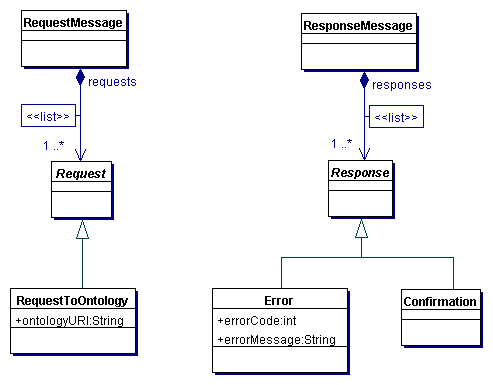
Figure 1. Protocol Objects
Before sending a request to a DIG 2.0 server, a client must establish a DIG session to the server. How this is done is specific to the transport protocol used to access the server. For example, if the server is accessed through HTTP/1.1, establishing a session corresponds to opening an HTTP/1.1 connection to the server. (The notion of a DIG session should not be confused with an HTTP/1.1 session.)
A DIG session is a concept of DIG 2.0 that abstracts the actual bidirectional communication channel between the client and the server. It provides primitives to transport requests and responses. The actual implementation of the session is defined by the transport mechanism used to access a DIG 2.0 server.
A DIG session also provides an abstraction for concurrent processing of requests. Namely, DIG servers are allowed to service several clients concurrently; however, interaction within one DIG session is not concurrent. A DIG session is assumed to transport requests and responses sequentially, one at the time. Each request should be processed by the DIG server such that the results are the same as if the requests were processed sequentially in the order they were dispatched. Furthermore, the server must send the responses to the client in exactly the same order in which the requests arrived.
DIG 2.0 does not prescribe how concurrent requests issued through different DIG sessions are to be handled. Servers are free to provide their own mechanisms for isolating interaction between different DIG sessions.
A DIG session can be terminated by the client or the server. Furthermore, due to environmental circumstances (e.g., network problems or timeouts), a DIG session can be broken asynchronously. Regardless of the cause, all requests issued on a DIG session that were not completed when the DIG session was terminated must be made invalid. The exact meaning of this is not precisely specified. A DIG server can, but is not required to, implement a transaction mechanism for rolling back not completed requests. If a client establishes a different DIG session, a DIG server should not send any responses for the invalid requests: each response can be transmitted only through the DIG session through which the request was initiated.
Depending on the transport mechanism, it might be inefficient to send individual requests to a DIG server separately. For example, to avoid problems with network latency, it might be better to bundle several requests to a DIG HTTP/1.1 server in one GET method than to send each request separately. Therefore, DIG 2.0 allows requests to be bundled into messages. As shown in Figure 1, a RequestMessage object encapsulates a list of Request objects, whereas a ResponseMessage object encapsulates a list of Response objects. A transport mechanism should communicate either by sending each request separately or by using messages.
If a transport mechanism uses messages, then each request message REQM must correspond to exactly one response message RESM. The message RESM must contain the responses to all the requests from REQM, and all responses must be listed in RESM in the order matching with the order of the requests in REQM. The responses must be the same as if the requests were executed sequentially in the order specified in REQM. (A DIG server is free to execute the requests in any way it wishes, as long as the requests are seemingly executed sequentially. For example, if a reuqest to update the ontology is followed by a query request, the responses to the query must take the updates into account.)
A common transport mechanism for communicating with a DIG 2.0 server is through [HTTP/1.1] protocol and communication by messages (see Section 3.2). A DIG session is mapped to an HTTP connection and is typically established upon sending the first request. HTTP servers are in general allowed to close the HTTP connection at their own discretion, which in effect terminates the DIG session. In order to prevent this from happening, the client can include the keepAlive in the header of each HTTP request it sends. DIG 2.0 HTTP servers are required to recognize this HTTP header and implement its functionality according to the HTTP/1.1 specification.
Messages are sent using the HTTP POST requests. The content type for messages is text/xml. The length of messages is determined according to the HTTP standard; however, both clients and servers are encouraged to specify the length of the message explicitly through the Content-Length HTTP header.
HTTP messages are encoded using an XML schema available at http://dig.manchester.ac.uk/schema/dig2.0.xsd. The schema is obtained by a straightforward translation of the objects from UML diagrams in this specification. It declares two top-level elements: RequestMessage represents the request messages and ResponseMessage represents the response messages. The names of all other elements correspond to the names of the classes in UML diagrams.
If either party (the DIG client of the DIG server) detects a violation of the HTTP protocol (e.g., invalid headers), it should respond as specified in the HTTP standard and then close the HTTP connection.
If the DIG client detects an invalid DIG message (e.g., the XML content cannot be parsed, the message is not formatted according to the DIG specification, or inappropriate response was sent), it should simply close the HTTP connection.
The DIG server can operate in two modes. In the message-at-the-time mode, the server first parses the entire message, validates it, and then executes it. If the message cannot be parsed or if it is not a valid DIG message, the server sends the following response (errorMessage is an optional element describing the type of error) and closes the HTTP connection:
<dig:ResponseMessage> <dig:MessageFormatError errorMessage="..."/> </dig:ResponseMessage>
In the request-at-the-time mode, the server parses and validates the message incrementally. After each request is extracted from the message, the server executes it and sends the response to the client. The server can detect an error in the message before parsing and processing the first request; in that case, the response is the same as in the message-at-the-time case. The server can detect an error in the message after several requests have already been processed and the repsonse sent to the client. If that happens, the server should write a dig:ResponseMessage element into the response and close the HTTP connection. Thus, the response message in this case might look like this:
<dig:ResponseMessage> [responses for some requests] <dig:MessageFormatError errorMessage="..."/> </dig:ResponseMessage>
Closing the HTTP connection after protocol errors ensures that both the client and the server can safely recover from errors and resume normal operation.
OWL 1.1 allows xml:base on all elements (for information about XML Base, please see [XML Base]). Since DIG 2.0 reuses the XML schema of OWL, it must support xml:base on OWL elements. DIG 2.0 does not, however, support xml:base on DIG most elements, thus requiring URIs to be fully specified. The elements Tell and Retract are exceptions: they contain axioms so, to make them compatible with OWL 1.1, they support xml:base.
As already mentioned, each request in DIG 2.0 must be accompanied by a corresponding response. If a request has been successful, the type of the response returned depends on the request and may contain additional data. If a request does not produce any specific data, the DIG server should return a Confirmation response to the client. For example, if a request to write axioms into an ontology succeeds, only a confirmation response is returned indicating that all axioms were written successfully.
If a request cannot be executed, the DIG server should return an Error response to the DIG client containing an error code and a message specifying the cause for failure. The following error codes are used in this specification:
| Error Code | Error Type |
|---|---|
| 100 | General Unspecified error |
| 101 | The request of the given type is not supported |
| 201 | Cannot create new ontology |
| 202 | The ontology with given URI already exists |
| 203 | Unknown ontology URI |
| 300 | Unsupported axiom in Tell request |
| 400 | Invalid hierarchy node ID |
| 401 | No hierarchy node for the given entity |
If a server cannot process a request, it should attempt to recover gracefully and process other pending requests as if the error did not happen. If, however, this recovery is not possible, after sending the Error response, the server should close the DIG session. The state of the server after such an action is not prescribed by this specification.
This specification does not require requests that modify an ontology to execute atomically. For example, a Tell request for writing axioms into an ontology might fail after several axioms have been already written into the ontology. In this case, the DIG server is not required to roll back the already written axioms -- the behavior of the server is implementation-specific. Nevertheless, DIG 2.0 implementors are encouraged to ensure that requests which modify an ontology are executed atomically.
DIG 2.0 implementors are free to extend the set of supported DIG primitives. This can be simply done by providing adequate subclasses of Request and Response with appropriate parameters. Since RequestMessage and ResponseMessage objects contain lists of Request and Response objects, respectively, such proprietary extensions can readily be passed in messages.
To enable the embedding of new requests and responses into XML messages passed through HTTP/1.1, implementors should use the redefinition mechanism of XML Schema and extend the dig:Request and dig:Response element groups. For example, let us assume that some extension of DIG defines new request and response elements. These elements should be defined in a separate XML schema file with a separate namespace (in this example, the extension file is extension.xsd, the namespace is http://example.com/ext#, and it is abbreviated as ext):
<?xml version="1.0" encoding="UTF-8"?>
<xsd:schema
xmlns:xsd="http://www.w3.org/2001/XMLSchema"
targetNamespace="http://example.com/ext#"
elementFormDefault="qualified" attributeFormDefault="qualified">
<xsd:element name="NewRequest">
...
</xsd:element>
<xsd:element name="NewResponse">
...
</xsd:element>
</xsd:schema>
The next step is to redefine the DIG 2.0 schema. It is not necessary to modify the original DIG 2.0 file; rahter, a new file (e.g., dig2.0-ext.xsd) of the following form can be used:
<?xml version="1.0" encoding="UTF-8"?>
<xsd:schema
xmlns:xsd="http://www.w3.org/2001/XMLSchema"
xmlns:dig="http://dl.kr.org/dig2.0#"
xmlns:ext="http://example.com/ext#"
targetNamespace="http://dl.kr.org/dig2.0#"
elementFormDefault="qualified" attributeFormDefault="qualified">
<xsd:import namespace="http://example.com/ext#" schemaLocation="extension.xsd"/>
<xsd:redefine schemaLocation="http://dig.manchester.ac.uk/schema/dig2.0.xsd">
<xsd:group name="Request">
<xsd:choice>
<xsd:group ref="dig:Request"/>
<xsd:element ref="ext:NewRequest"/>
</xsd:choice>
</xsd:group>
<xsd:group name="Response">
<xsd:choice>
<xsd:group ref="dig:Response"/>
<xsd:element ref="ext:NewResponse"/>
</xsd:choice>
</xsd:group>
</xsd:redefine>
</xsd:schema>
Note that the XML schema dig2.0-ext.xsd has the same namespace as the original DIG 2.0 schema. This is necessary because of the redefinition mechanism of XML schema: the namespace of the redefining schema must be the same as the namespace of the redefined schema. Therefore, we need to use two files: extension.xsd to define the extension in the namespace http://example.com/ext# and dig2.0-ext.xsd to redefine the core DIG 2.0 namespace.
One can avoid creating two files if the extension is defined in DIG 2.0 namespace. For example, if NewRequest and NewResponse were to be parts of DIG 2.0 namespace, one might use the following schema:
<?xml version="1.0" encoding="UTF-8"?>
<xsd:schema
xmlns:xsd="http://www.w3.org/2001/XMLSchema"
xmlns:dig="http://dl.kr.org/dig2.0#"
targetNamespace="http://dl.kr.org/dig2.0#"
elementFormDefault="qualified" attributeFormDefault="qualified">
<xsd:redefine schemaLocation="dig2.0.xsd">
<xsd:group name="Request">
<xsd:choice>
<xsd:group ref="dig:Request"/>
<xsd:element ref="dig:NewRequest"/>
</xsd:choice>
</xsd:group>
<xsd:group name="Response">
<xsd:choice>
<xsd:group ref="dig:Response"/>
<xsd:element ref="dig:NewResponse"/>
</xsd:choice>
</xsd:group>
</xsd:redefine>
<xsd:element name="NewRequest">
</xsd:element>
...
<xsd:element name="NewResponse">
...
</xsd:element>
</xsd:schema>
This type of extension is, however, strongly discouraged: if two extension files ext1.xsd and ext2.xsd both directly extend the DIG 2.0 schema (without defining a new namespace), it is not possible to use them at the same time, because XML schema does not allow for the redefinition of two schemas at the same time.
All DIG servers must support the DIGDescribe request, shown in Figure 2. The response to this request is DIGDescription, containing the name of the DIG server, its version, an optional identification message, a flag specifying whether the server supports annotations, and a set of names of supported requests. In this way, each DIG client can learn about the capabilities of the DIG server.
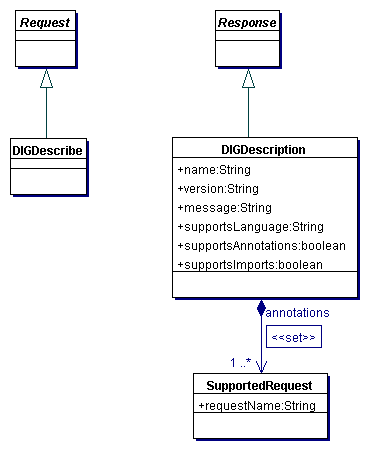
Figure 2. DIGDescribe Request
The supportsLanguage attribute of the DIGDescription response contains the name of the ontology language that the DIG implementation supports. The language is simply identified by a string identifier. DIG 2.0 defines the following identifiers, based on the OWL 1.1 specification:
Other fragment identifiers may be introduced in future, with each fragment being described by a natural language specification. Proposals were made to represent each fragment using an XML schema. This, however, turned to be quite a complex solution; furthermore, many fragments cannot be fully described using a context free grammar (which roughly corresponds to the expressivity of the XML Schema language). Therefore, such solutions were not included into DIG 2.0.
The meainings of supportsAnnotations and supportsImports were explained in sections 2.2 and 2.3, respectively.
DIG servers can manage more than one ontology simultaneously. As in OWL 1.1, each ontology is identified with a unique URI. Most DIG 2.0 requests are derived from the RequestToOntology class, which has an ontologyURI parameter identifying the ontology to which the request applies. If an ontology with the given URI cannot be found, the server should return the error code 203 (Unknown ontology URI).
DIG 2.0 provides several primitives for management of ontologies available at the server, which are shown in Figure 3.
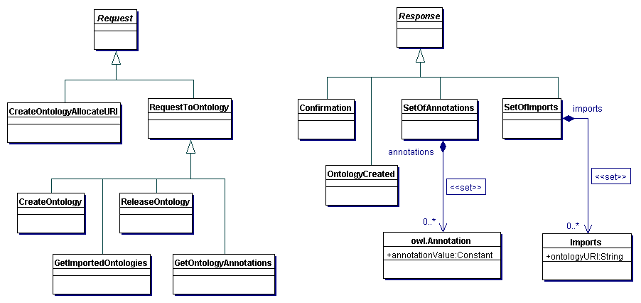
Figure 3. Primitives for Management of Ontologies
The CreateOntology request instructs the server to create a new ontology with a given ontologyURI. The request CreateOntologyAllocateURI instructs the server to allocate a new URI and to create a new ontology with that URI. Both of these requests return the OntologyCreated response containing the URI of the created ontology.
It is good practice for clients to release an ontology once it is not in use any more, as this allows the DIG server to free the resources allocated for the ontology. This can be done using the ReleaseOntology, to which the server should respond with the Confirmation response.
OWL 1.1 allows each ontology to import other otnologies. The set of all imported ontologies can be determined using the GetImportedOntologies request, to which the server should issue the SetOfImports response. If a DIG server does not support imports, it should respond with an empty set.
OWL 1.1 allows each ontology to contain several annotations. These can be retrieved using the GetOntologyAnnotations request, to which the server should issue the SetOfAnnotations response. If a DIG server does not support annotations, it should respond with an empty set.
The primitives that allow changing the contents of an ontology are shown in Figure 4.
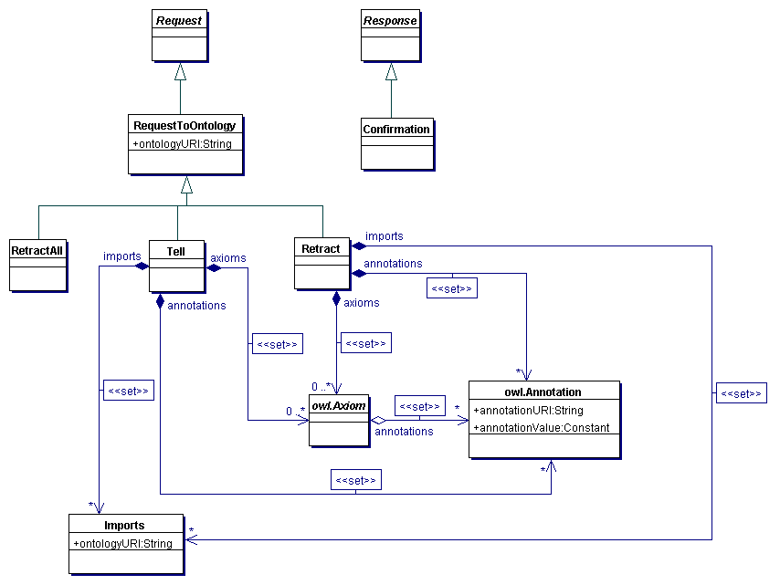
Figure 4. Tells and Retracts
The Tell request takes a set of OWL 1.1 imports, a set of ontology annotations and a set of axioms and adds them to the ontology with a given ontologyURI. In [OWL 1.1 Specification], an ontology is defined as a set of axioms; thus, an ontology cannot contain two axioms that are structurally equivalent. A DIG server must follow this definition. A server is not required to respond with an error if a structurally equivalent axiom is already a part of the ontology; it should, however, keep only one copy of the structurally equivalent axiom. If all axioms are successfully added to the ontology, the server should respond with a Confirmation response.
The Retract request takes a set of OWL 1.1 imports, a set of ontology annotations and a set of axioms and removes them from the ontology with a given ontologyURI. The removal must obey the rules of structural equivalence of OWL 1.1: an axiom Ax is removed from an ontology if and only if the Retract request contains an axiom that is structurally equivalent to Ax. A server is not required to respond with an error if an ontology does not contain a structurally equivalent axiom. If all axioms are successfully removed from the ontology, the server should respond with a Confirmation response.
As mentioned in Section 3.4, DIG implementations are not required to support atomic tells and retracts; however, they are strongly encouraged to do so. Please refer to Section 3.4 for a discussion of this issue.
The concept language of DIG 2.0 is based on OWL 1.1, which removes many potential sources of incompatibility. Note that the XML schema for the dig:Tell element corresponds exactly to the structure of the owl11xml:Ontology element, so it is trivial to pass an OWL 1.1 ontology to a DIG reasoner through the DIG 2.0 interface.
Many DIG 2.0 requests retrieve information about an ontology. For clarity, they are separated into several groups.
The requests and responses for retrieving entities of an ontology are shown in Figure 5. The names of the requests are self-explanatory: each GetAllXXX returns all entities of type XXX that occur in some axiom (including declarations) in the ontology or some of the included ontologies. Note that, as a consequence of this definition, to remove an entity, one must remove from the ontology all axioms (including declarations) in which the entity ocucrs. The entities are returned as a SetOfEntities response.
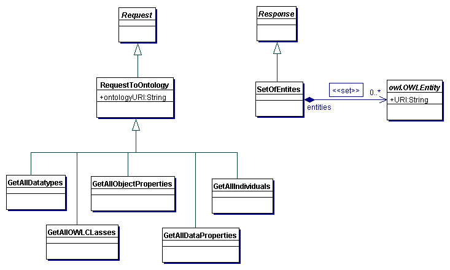
Figure 5. Retrieving Ontology Entities
Figure 6 shows requests that ask questions about the ontology. All questions return a Boolean value encapsulated in a BooleanValue response.
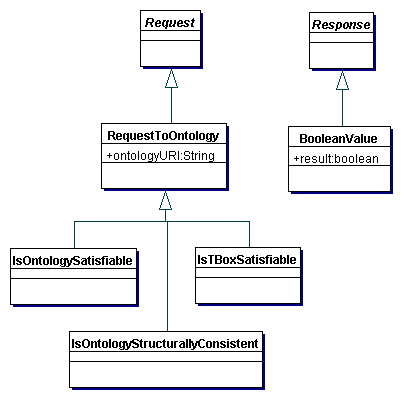
Figure 6. Questions about the Ontology
The IsOntologySatisfiable request returns true if the ontology is satisfiable (that is, if the TBox and the ABox together are consistent).
The IsTBoxSatisfiable request returns true if the TBox of the ontology is satisfiable.
The IsOntologyStructurallyConsistent request returns true if the ontology is structurally consistent according to the definition from [OWL 1.1 Specification].
Figure 7 shows requests that ask questions about classes. All questions return a Boolean value encapsulated in a BooleanValue response.
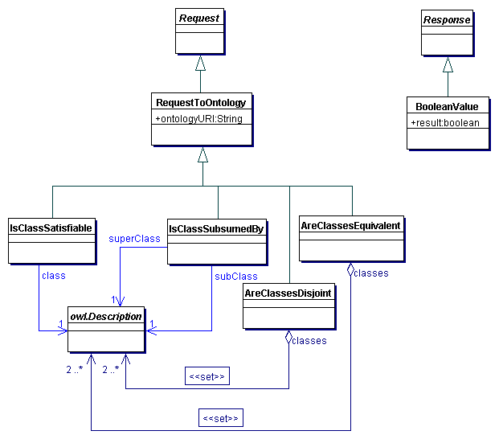
Figure 7. Questions about Classes
The IsClassSatisfiable request takes a class and returns true if the class is satisfiable w.r.t. the ontology.
The IsClassSubsumedBy request takes two classes and returns true if the first class is subsumed by the other w.r.t. the ontology. (The dig:IsClassSubsumedBy element in XML messages contains two dig:Description elements: the first one is the subclass and the second one is the superclass.)
The AreClassesEquivalent request takes a set of classes and returns true if they are equivalent w.r.t. the ontology.
The AreClassesDisjoint request takes a set of classes and returns true if they are pair-wise disjoint w.r.t. the ontology.
Figure 8 presents the requests for retrieving information about the inferred class hierarchy. A class hierachy is represented in DIG 2.0 as a set of ClassHierarchyNode objects. Each node is uniquely identified by a nodeID; these IDs are assigned to nodes by the DIG server and have no semantic meaning other than providing means to uniquely identify a node in a hierachy. Furthermore, a node contains a set of equivalent classes (the classes in the node), a set of IDs of parent nodes, and a set of IDs of child nodes.
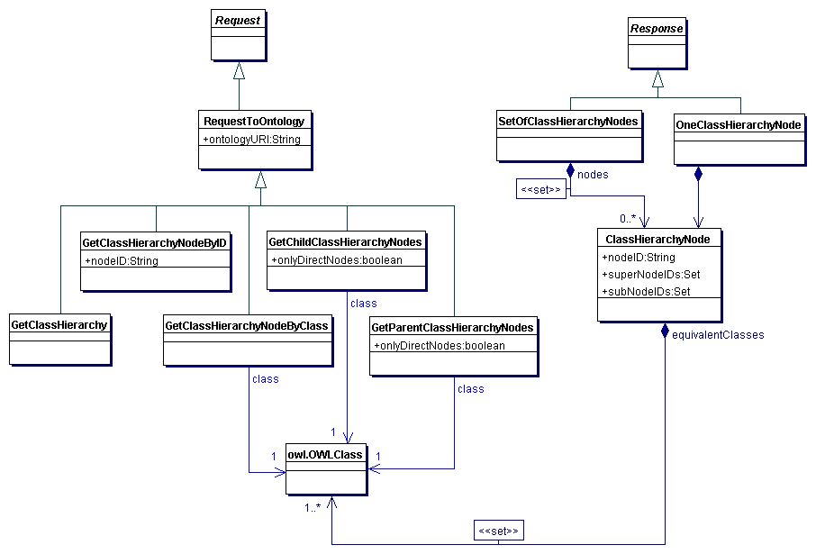
Figure 8. Questions about the Class Hierarchy
The GetClassHierarchy request returns the entire class hierarchy of the specified ontology; the response is SetOfClassHierarchyNodes.
The GetClassHierarchyNodeByNodeID request returns the class hierarchy node with the given ID; the response is OneClassHierarchyNode. If a node with the supplied node ID does not exist, an error with code 400 (invalid node ID) is returned.
The GetClassHierarchyNodeByClass request returns the class hierarchy node that contains the specified class; the response is OneClassHierarchyNode. If a node with the supplied class does not exist, an error with code 401 (no hierarchy node for given entity) is returned.
The GetParentClassHierarchyNodes request takes a class and returns the parent nodes of the node containing the given class. If there is no node for the given class, an error with code 401 is returned. If the Boolean flag onlyDirectNodes is set to true, then only direct parent nodes are returned; otherwise, all (direct and indirect) parent nodes are returned. The response is SetOfClassHierarchyNodes.
The GetChildClassHierarchyNodes request takes a class and returns the child nodes of the node containing the given class. If there is no node for the given class, an error with code 401 is returned. If the Boolean flag onlyDirectNodes is set to true, then only direct child nodes are returned; otherwise, all (direct and indirect) child nodes are returned. The response is SetOfClassHierarchyNodes.
Figure 9 shows requests that ask questions about object properties. All questions return a Boolean value encapsulated in a BooleanValue response.
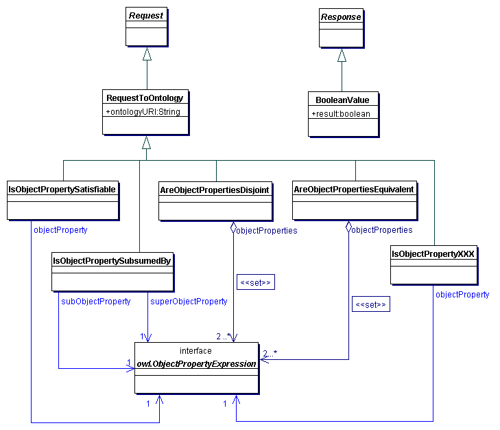
Figure 9. Questions about Object Properties
The IsObjectPropertySatisfiable request takes an object property expression and returns true if the object property is satisfiable w.r.t. the ontology.
The IsObjectPropertySubsumedBy request takes two object property expressions and returns true if the first expression is subsumed by the second w.r.t. the ontology. (The dig:IsObjectPropertySubsumedBy element in XML messages contains two properties: the first one is the subproperty and the second one is the superproperty.)
The AreObjectPropertiesEquivalent request takes a set of object property expressions and returns true if they are equivalent w.r.t. the ontology.
The AreObjectPropertiesDisjoint request takes a set of object property expressions and returns true if they are pair-wise disjoint w.r.t. the ontology.
The IsObjectPropertyXXX is a placeholder for several requests that take an object property expression and return true if it has the property XXX, where XXX can be Functional, InverseFunctional, Symmetric, Antisymmetric, Reflexive, Ireflexive, and Transitive.
Figure 10 presents the requests for retrieving information about the inferred hierarchy of object properties. These requests are completely analogous to the requests from Section 6.4. Just like the class hierarchy, an object property hierachy is represented in DIG 2.0 as a set of ObjectPropertyHierarchyNode objects. Each node is uniquely identified by a nodeID; these IDs are assigned to nodes by the DIG server and have no semantic meaning other than providing means to uniquely identify a node in a hierachy. Furthermore, a node contains a set of equivalent classes (the classes in the node), a set of IDs of parent nodes, and a set of IDs of child nodes.
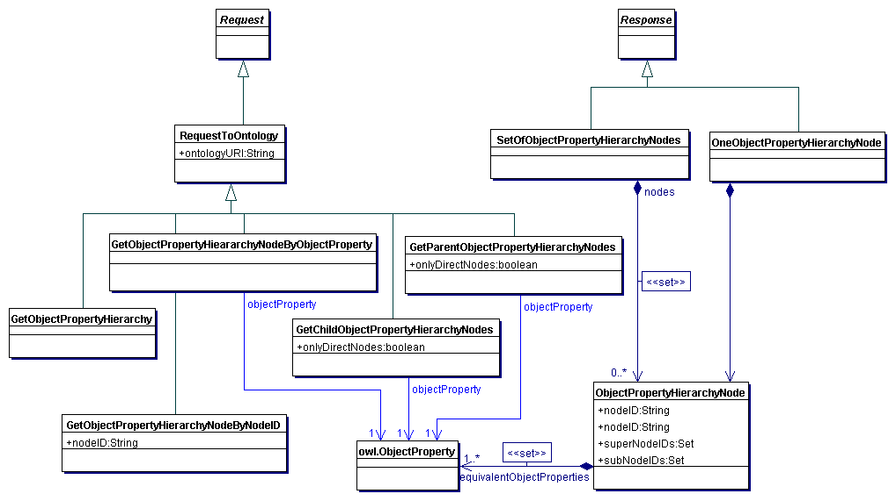
Figure 10. Questions about the Property Hierarchy
The GetObjectPropertyHierarchy request returns the entire object property hierarchy of the specified ontology; the response is SetOfObjectPropertyHierarchyNodes.
The GetObjectPropertyHierarchyNodeByNodeID request returns the object property hierarchy node with the given ID; the response is OneObjectPropertyHierarchyNode. If a node with the supplied node ID does not exist, an error with code 400 (invalid node ID) is returned.
The GetObjectPropertyHierarchyNodeByObjectProperty request returns the object property hierarchy node that contains the specified object property; the response is OneObjectPropertyHierarchyNode. If a node with the supplied object property does not exist, an error with code 401 (no hierarchy node for given entity) is returned.
The GetParentObjectPropertyHierarchyNodes request takes a class and returns the parent nodes of the node containing the given object property. If there is no node for the given object property, an error with code 401 is returned. If the Boolean flag onlyDirectNodes is set to true, then only direct parent nodes are returned; otherwise, all (direct and indirect) parent nodes are returned. The response is SetOfObjectPropertyHierarchyNodes.
The GetChildObjectPropertyHierarchyNodes request takes a class and returns the child nodes of the node containing the given object property. If there is no node for the given object property, an error with code 401 is returned. If the Boolean flag onlyDirectNodes is set to true, then only direct child nodes are returned; otherwise, all (direct and indirect) child nodes are returned. The response is SetOfObjectPropertyHierarchyNodes.
For data properties, DIG 2.0 supports the requests and responses that are completely analogous to the requests and responses for asking questions about the object properties and the object property hierarchy from Sections 6.5 and 6.6. For the sake of brevity, the requests and responses for data properties are not repeated in this section. The names of requests and responses for data properties are identical to the corresponing names for requests and responses for object properties, with the word Object replaced with the word Data.
The IsDataPropertyXXX requests is available only for XXX equal to Functional.
Figure 11 presents the requests for retrieving information about the inferred facts concerning individuals. Questions that return individuals as answers (e.g., retrieving the individuals that are connected to some individual through some role) are not covered by this specification; rather, they are handled by the DIG 2.0 Query Interface proposal [DIG 2.0 Query].
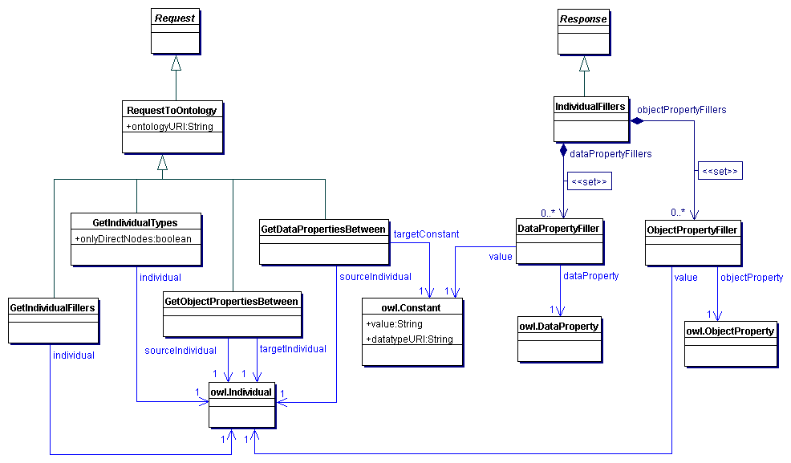
Figure 11. Questions about Individuals
The GetIndividualTypes request takes an individual and returns a set of most specific OWL classes that this individual is an instance of. If onlyDirectNodes is true, then only the nodes from the class hierarchy that the given individual is a direct instance of are returned; otherwise, all nodes are returned; the response is a SetOfClassHierarchyNodes.
The GetObjectPropertiesInBetween takes two individuals and returns the set of object properties that connect them; the response is a SetOfEntities.
The GetDataPropertiesInBetween takes an individual and a constant and returns the set of data properties that connect them; the response is a SetOfEntities.
The GetIndividualFillers takes an individual I and returns the pairs (P,V) such that P(I,V) is entailed by the ontology. The respones are separated into two distinct sets: the object property and the data property fillers. The response to this request is a IndividualFillers.